image classification (arcgis)#
This practical is designed to give you experience with different classification techniques using ArcGIS Pro. In particular, by the end of this practical, you will:
be able to perform an unsupervised classification in ArcGIS Pro
use the training sample manager to create a classification schema and collect training samples
perform multiple supervised classification techniques such as Random Forest and Support Vector Machine classification
perform object-based classification
conduct an accuracy analysis on your classification results.
getting started#
First, make sure to download the area_uncertainty.py script, and save it to your EGM702 data folder. You will need this to complete the accuracy analysis portion of the practical.
If you haven’t already, open up the same ArcGIS project that you have used for the previous weeks. To get started, we’ll create a new dedicated map for our classification work. Under the Insert tab at the top of the ArcGIS window, click on New Map to create a new map inside of your existing project.
Next, rename this map by right-clicking on the map name in the Contents pane, then selecting Properties. Change
the Name to Classification, then click OK.
Finally, let’s change the basemap from the World Topographic Map to the World Imagery. Under the Map tab, click on Basemap and select Imagery.
Your new map should now look something like this:
{kind=link}
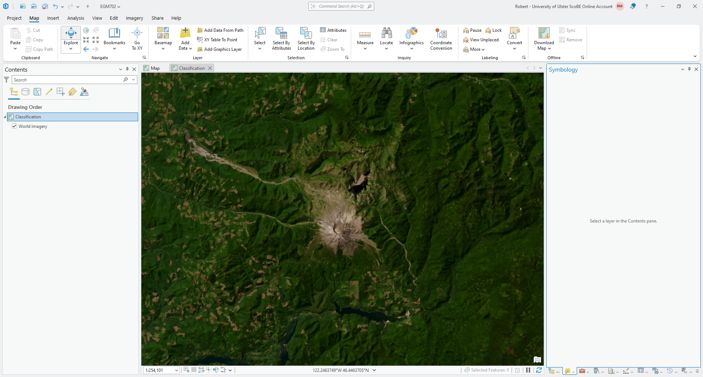
Next, add the 2011 SR composite image (LT05_L2SP_046028_20110730_20200820_02_T1.tif), and change the
Symbology to be a NIR/Red/Green false color composite:
{kind=link}
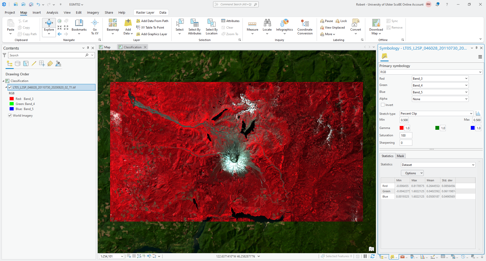
Assuming that your bands are still in the same order as last week, this should be Band_3, Band_4, and
Band_5, as shown in the above screenshot. Once you have added the landsat image, move on to the next section.
unsupervised classification#
Now that the new Map is set up, we can move on to the unsupervised classification, using the Iso Cluster (“Iterative Self-Organizing”) unsupervised classification tool. This tool works by first separating pixels into initial clusters.
It then computes the mean value for each cluster in each band, and iteratively re-assigns pixels into clusters based on the minimum distance between the pixel values and the cluster centers. This process repeated until the classes become “stable” (only small changes from one iteration to the next), or the specified maximum number of iterations is reached.
Open the Iso Cluster Unsupervised Classification tool (documentation) in the Geoprocessing panel, then add the Landsat image as the Input raster bands:
{kind=link}
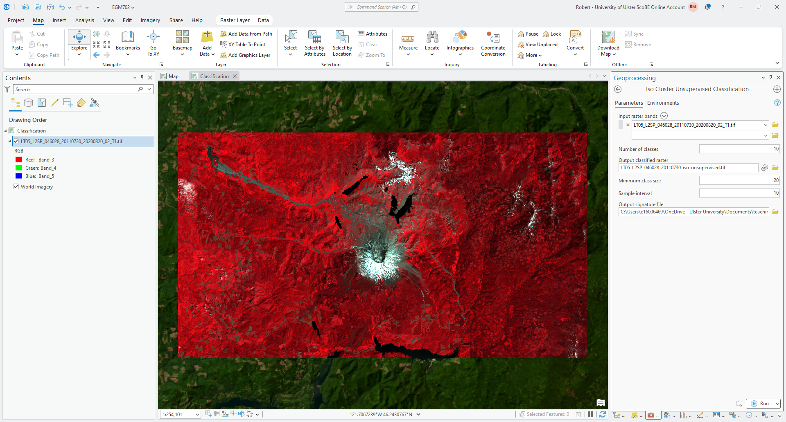
One thing that we need to do when using this tool is decide on the maximum Number of classes, or clusters,
that we want to split the input data into. Each scene is going to be different, because the clustering is based on the
statistics of the scene.
In practice, you would choose an initial guess, run the classification, and examine the output. If you notice that some clusters appear to be very similar landcover types, you could then merge the output classes using, for example, the Reclassify tool we’ve used before, or you could re-run the classification with fewer classes.
For now, we’ll go with 10 classes, which might be slightly more than we need. Save the output as
LT05_L2SP_046028_20110730_iso_unsupervised.tif, and leave the Minimum class size and Sample interval as
their default values. The Minimum class size means that classes with fewer than this number of pixels will be
merged into the closest classes at the end of the classification, while the Sample interval sets the sampling
spacing for the iterative clustering calculation.
Save the Output signature file to LT05_L2SP_046028_20110730_iso_unsupervised.gsg. This file contains the
description of the classification, including the number of pixels (“cells”) that fall into each class,
the mean value of the cluster in each of the input rasters, and the covariance of each of the input bands within the
cluster.
Click Run to run the classification - you should see something like this when it finishes:
{kind=link}
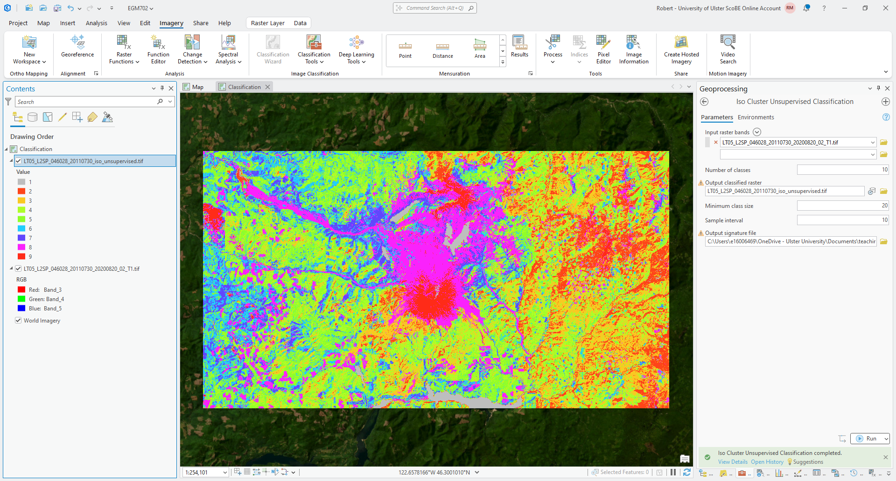
Note
It’s important to note that the classes, or clusters, output by an unsupervised classification have no meaning, in the sense that they’re only groups of pixels based on the statistics of the image data.
After running an unsupervised classification, then, the next task is to interpret and identify what each of these clusters represent.
Question
Look at the class that appears to cover the different lakes in the image (1 in the example above). Where else
do you see this class? What type(s) of surface does this seem to represent? Can you think of some ideas or
approaches that might help distinguish between these two surface types?
We’ll leave the unsupervised classification here for the moment, but one use that can be quite useful is in helping to identify different landcover types present in an image, and to help identify locations/pixels to use for selecting training samples. As mentioned in last week’s practical exercise, we can also combine multi-temporal PCA with unsupervised classification or clustering to help identify different types of change in the PCA image.
creating training samples#
Now that we’ve had a look at unsupervised classification, we’ll look at supervised classification methods. As mentioned in the lectures, supervised classification requires that we identify samples of our different classes, which we then use to train the classifier.
How exactly the training works depends on the type of algorithm, but in any case the first part, where we collect samples, looks very similar. In fact, we will only do this part once, then train different classifiers using the same samples.
To begin, make sure that the Landsat image is selected in the Contents panel. Click on the Imagery tab at the top of the window, then click Classification Tools, followed by Training Samples Manager (documentation).
This will open a panel at the right-hand side of the window:
{kind=link}
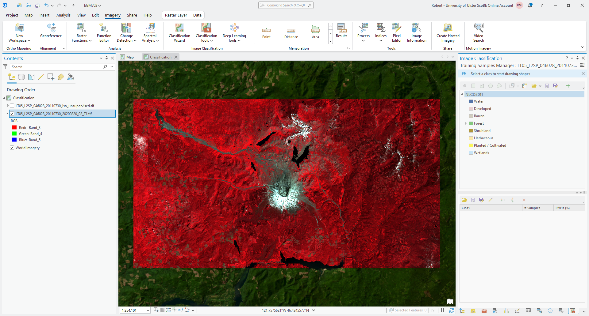
By default, the schema (class names/symbology and values for the classified raster) that is loaded is the 2011
National Land Cover Database (NLCD2011).
Most of the landcover classes used here are similar to what we might want to use in our own classification, so we could
very well just use this schema with some adjustments.
We’ll create our own schema with five classes: water, forest, thin vegetation, soil, and snow. First, click on the Create New Schema button:
{kind=link}
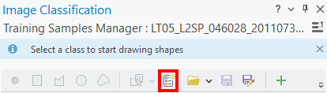
This will remove all of the existing class definitions.
To add a new class, click the +:
{kind=link}
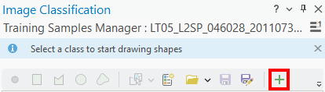
Name this new class water and give it a Value of 0. You can choose your own color, but you can also
specify the color using the hexadecimal (“hex”) code.
To do this, click on Color, then select Color Properties:
{kind=link}
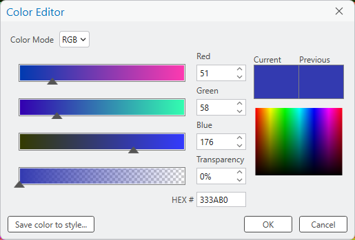
Next to HEX #, enter 013dd6, which will change the color to a shade of blue. Click OK, then click
OK again to finish editing the class properties and add the new class to the schema. You should see something like
this:
{kind=link}
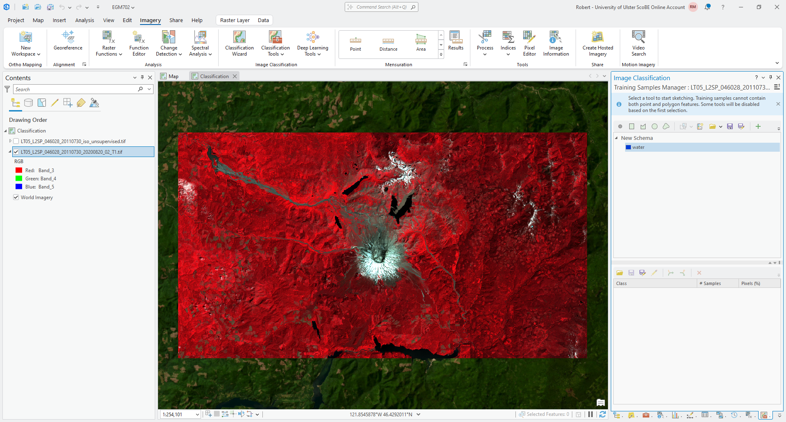
Now, save the schema by clicking on Save As in the Training Samples Manager - this will allow you to re-use
this schema later on.
Now, add the rest of the classes in the same way that you did for water:
class name |
value |
hex code |
water |
0 |
|
forest |
1 |
|
thin vegetation |
2 |
|
soil |
3 |
|
snow |
4 |
|
Warning
Make sure to highlight the name of the schema before clicking the +, otherwise the new class will be added as a sub-class of the one you’ve highlighted!
Note
You are welcome to change the color using the suggested hex code, but it is not necessary. Of course, if you don’t, your results will have a different appearance.
Your schema should look something like this:
{kind=link}
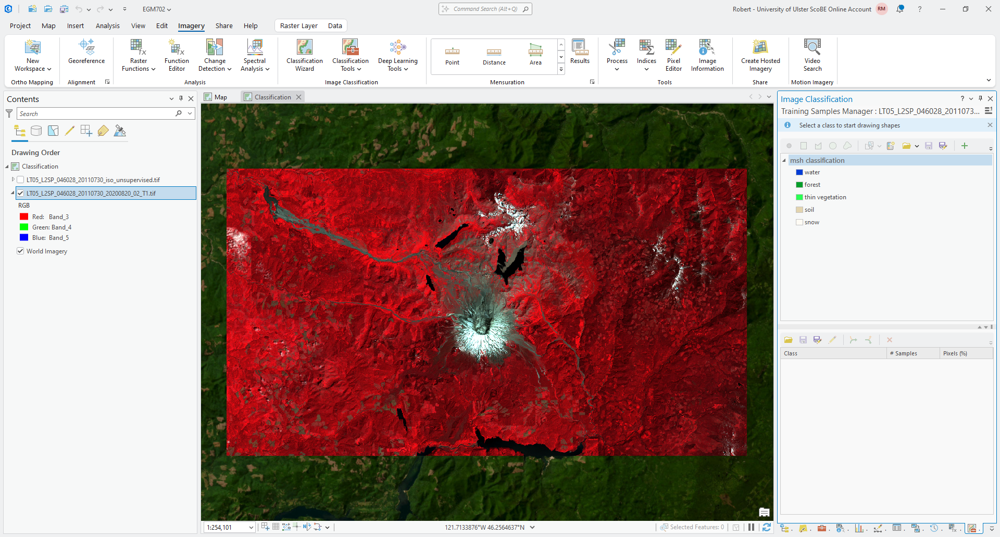
Once you have added the remaining classes, remembering to save the schema again, we can move on to adding the
training samples.
The Training Samples Manager allows you to select training samples in the image in the following ways, ordered from left to right:
a Point
a Rectangle
a Polygon
a Circle
a Freehand shape
Note that if you start by adding points, you won’t be able to add polygons later on (and vice-versa). We’ll start by
using a freehand shape. Make sure that the water class is highlighted, then click on the freehand shape button.
Now, zoom in on Castle Lake just to the west of Mt St Helens. To start digitizing a shape, just click and hold down the mouse button until you’re finished digitizing the shape:
{kind=link}
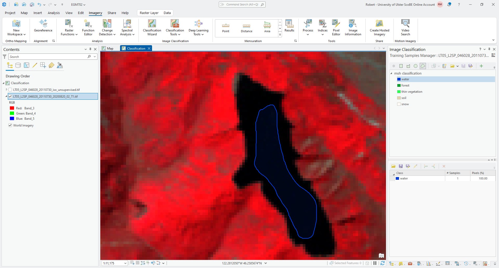
Tip
You don’t need to completely cover the lake, but try to make sure that you get a good number of pixels while also avoiding pixels at the edges of the lake.
Make sure to Save your training samples to your data folder as msh_classification_samples.shp. Then, add a
second water sample - for example, as a rectangle in Spirit Lake:
{kind=link}
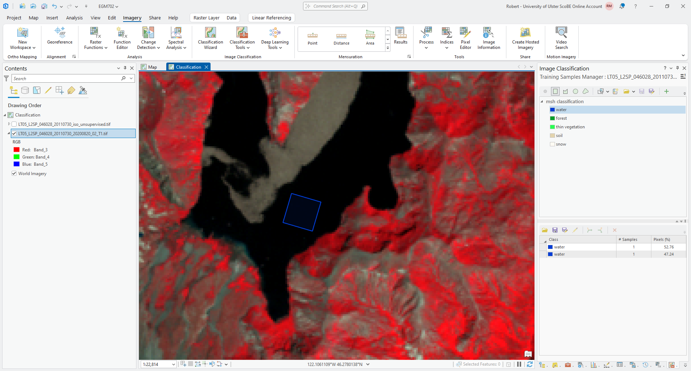
In the Training Samples Manager, you can see that there are two samples shown, each with the same class. As
we add more an more samples from each class, we might want to organize these to be able to see the proportion of pixels
that are contained in each class.
To do this, select the samples that you want to merge (or “Collapse”), then press the Collapse button:
{kind=link}
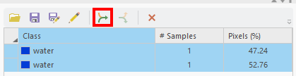
You should see that your samples are merged into a single line:
{kind=link}
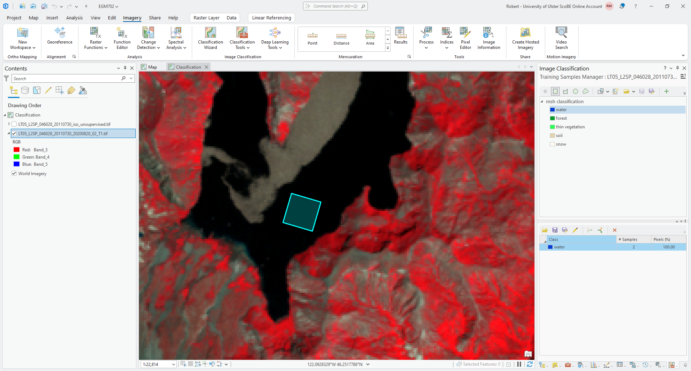
Continue adding training samples for each of the different classes until you have a good amount of samples from
across the entire image:
{kind=link}
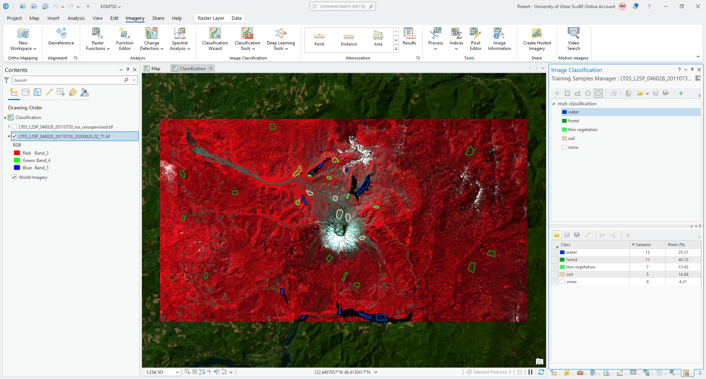
Note that your training samples should roughly follow the distribution of classes in the image - that is,
because this is an area with lots of forest, your forest samples should be the largest class, and the snow samples
should be the smallest.
Make sure to save the training samples one last time, then move on to the next section.
pixel-based classification#
We will begin with pixel-based classification, and see how the training samples that we have created can be used to train different classifiers. The two algorithms that we will use are:
Random Forest (or “Random Trees”, as implemented in ArcGIS Pro)
Support Vector Machine
Random Forest is an algorithm that uses the output of multiple decision trees to classify inputs. Support Vector Machine works by attempting to find the hyperplane that provides the best separation between two or more classes in feature space. These algorithms perform differently depending on the input training data, so it’s not a bad idea to try both and compare the results.
In either case, the approach for supervised classification in ArcGIS Pro is:
train the classifier using the labeled training samples
apply the classifier to the entire raster
We can do these steps separately, or we can use the Classify tool to do them at the same time. The instructions below make use of the Classify tool, but the steps are very similar if you’re doing them separately.
random forest#
With the Landsat image highlighted in the Contents panel, open the Imagery tab and click on Classification Tools, then select Classify (documentation).
Select Random Trees as the Classifier, and make sure that msh_classification_samples is the
Training Samples.
For now, we can leave the default values for Maximum Number of Trees at 50, the Maximum Tree Depth at
30, and the Maximum Number of Samples per Class at 1000.
Save the output as RF_PBIA_20110730_50_30_1000.tif, and save the Output Classifier Definition File as
RF_PBIA_20110730_50_30_1000.ecd.
The tool should look something like this:
{kind=link}
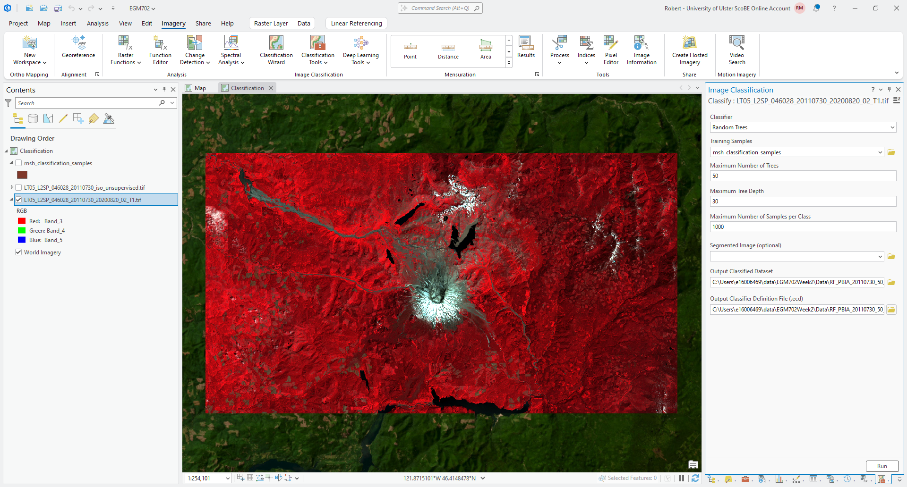
Tip
In the example above, I’ve included the algorithm (RF), number of trees (50), tree depth (30), and number of samples per class (1000) in the filename.
It’s probably not a bad idea to include the parameters used in the filenames of your classified rasters, to help you keep them straight when comparing the outputs later on.
Note
The .ecd file is a file that contains all of the parameters needed to apply the classifier to an image. You can, for example, use this file and the Classify Raster tool to classify another image or stack of images, without needing to select new training samples and train the classifier again.
Press Run to run the Classify tool. After some time, you should see something like this:
{kind=link}
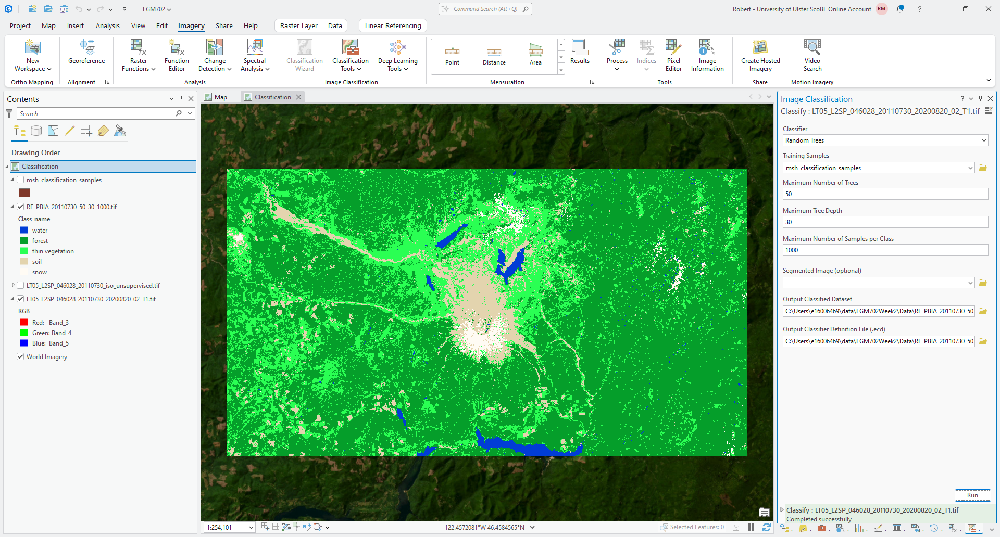
Question
Have a look at the classified image - what characteristics do you notice? Do you notice any areas of obvious mis-classification?
calculating class area#
One thing that we will need for later is the area (in \({\rm km}^2\)) of each class in our image. We could use Zonal Statistics as Table, as we have previously, but this would largely be overkill as we only want to know the area of each zone/class, rather than the statistics of a raster within the zone/class.
Instead, we will use the Tabulate Area tool (documentation). Normally, this is used to calculate the area of cells within one raster that fall within the zones of another layer, but here we’ll use it to calculate the area of each of our classes in a single raster.
Open the tool in the Geoprocessing panel, then add RF_PBIA_20110730_50_30_1000.tif as both the
Input raster or feature zone data and the Input raster or feature class data. For both Zone field and
Class field, you should see Value.
Save the output as RF_PBIA_20110730_50_30_1000 as an in-memory layer by pressing the Memory Workspace button
next to the field where you enter the output table name.
Finally, check the box next to Classes as rows in output table. The tool should look like this:
{kind=link}
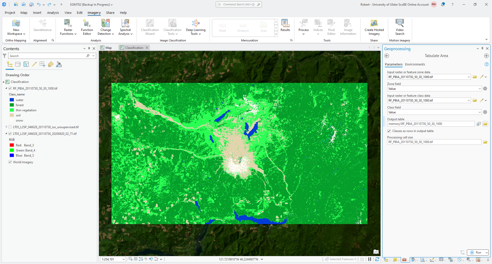
Press Run to run the tool. When it finishes, you should see the table added at the bottom of the Contents
panel under Standalone Tables. Right-click on the table name, then click Open to view the table:
{kind=link}
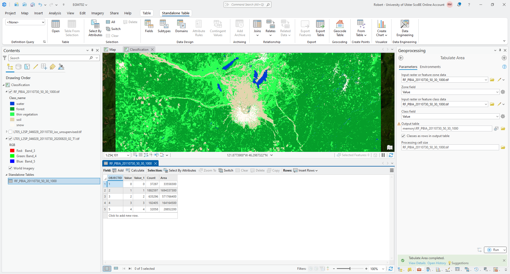
At the moment, the area values are in the same units as the CRS used by the raster, which is square meters. And,
the only information about each class is the value in the classified raster, rather than the name.
We will add two new fields to this table - click the Add button next to Field: at the top of the table panel. Under the last row of the field view table, click on Click here to add a new field.
Give this field the Field Name and Alias Name, and ensure that Data Type is set to Text. Then,
click on Click here to add a new field again.
Give this field the Field Name and Alias Area_km2, and ensure that Data Type is set to Double.
Click the cell for Number Format in this row, then click on the gray button with three dots to open the
Number Format dialog:
{kind=link}
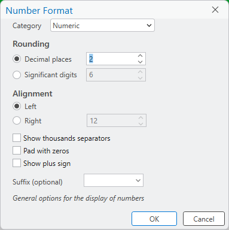
Change the Category to Numeric, and change the number of decimal places to 2. Click OK to close
the Number Format dialog and return to the table.
Your Fields should now look like this:
{kind=link}
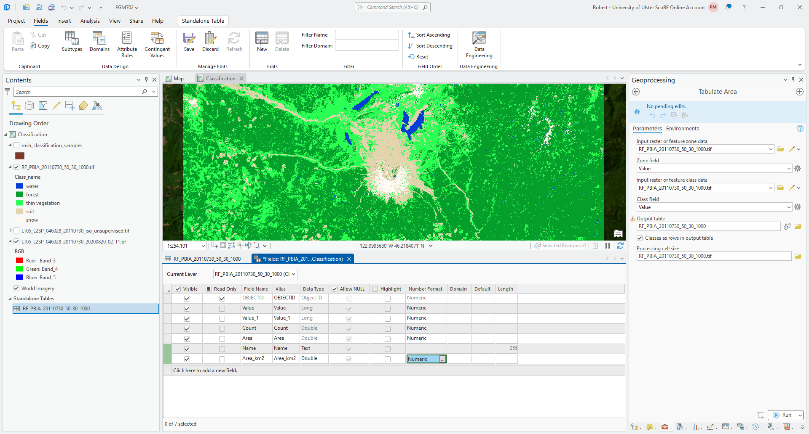
Save the changes to the table (Standalone Table > Save), then close the fields tab.
Your table should now look like this:
{kind=link}
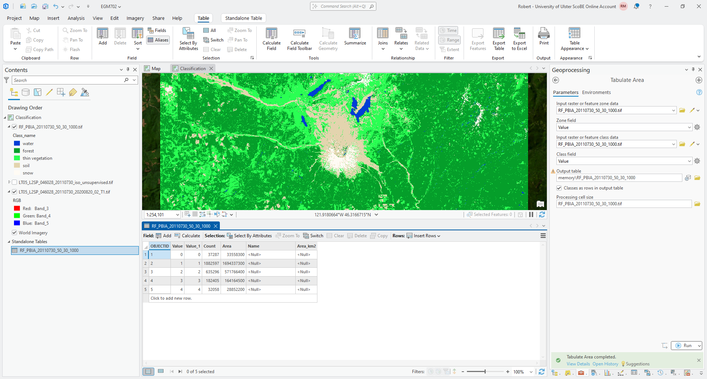
Now, fill in the values of the Name column with the names of the different classes. If you’re not sure
which names correspond to which Value, refer to the table in the Creating Training Samples section above.
Once you have finished adding the names of each class, click on Calculate next to the Field: at the top of the panel:
{kind=link}
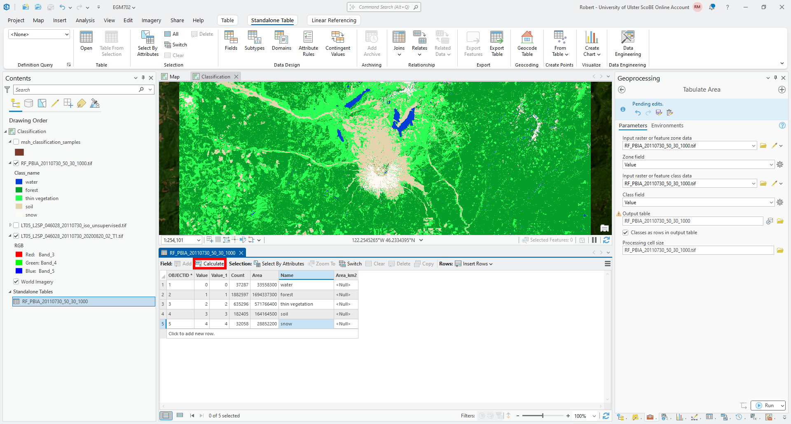
Under Select an existing target field, select Area_km2. Then, under
Enter an expression to calculate field values, copy and paste the following formula:
!Area! / 1e6
This will take each of the values in the Area column (!Area! so that the software knows it’s a field name) and
divide them by \(10^6\), converting from \({\rm m}^2\) to \({\rm km}^2\).
At the end, your table should look like this:
{kind=link}
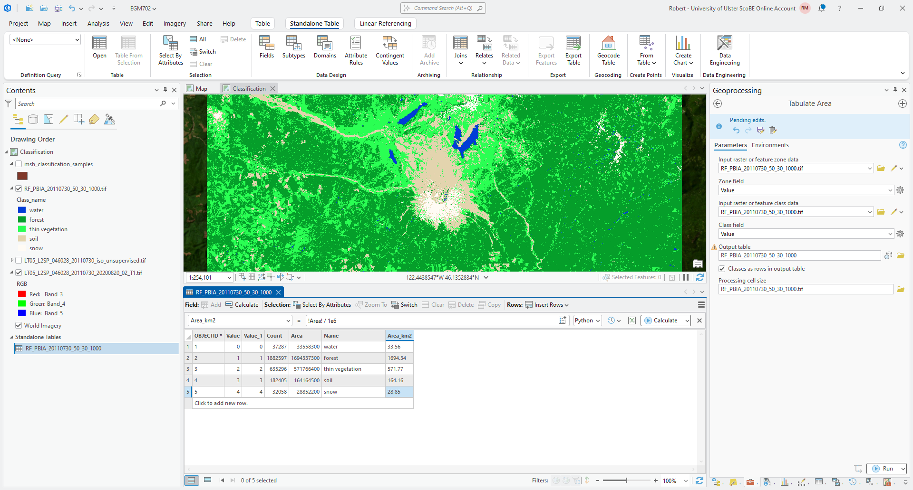
Once you have added the Name and Area_km2 fields, and filled them with values (either manually or
as a calculation), export the table by right-clicking on the table in the Contents panel, then selecting Data >
Export Table:
{kind=link}
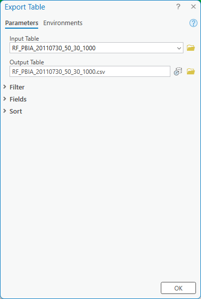
Save the output as RF_PBIA_20110730_50_30_1000.csv in your EGM702 data folder. We will use this later on for
the accuracy analysis, where we will calculate the area uncertainty of each class using the confusion matrix generated
as part of the accuracy analysis.
For now, you can move on to the next section.
Warning
If you don’t export the table as a CSV, it will stay as an in-memory layer. This means that when you close ArcGIS (or, perhaps, if it crashes), the table will disappear and you will lose it.
support vector machine#
To run the support vector machine classification, ensure that you have selected the original Landsat image in the Contents panel, then click on the Imagery tab > Classification Tools > Classify.
This time, under Classifier, select Support Vector Machine. Use the same training samples as before, and use
the default Maximum Number of Training Samples per Class.
Save the Output Classified Dataset to your EGM702 data folder as SVM_PBIA_20110730_500.tif, and save the
Output Classifier Definition File (.ecd) as SVM_PBIA_20110730_500.ecd.
Click Run. As before with the random forest classification, after some time, you should see the classified image added to the map:
{kind=link}
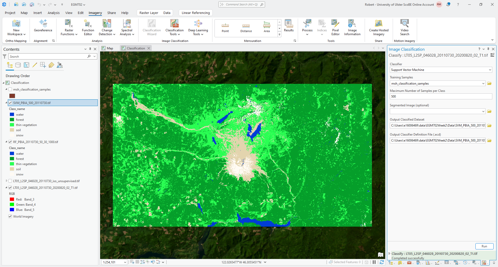
Question
Using the Swipe tool, or by toggling between the two layers, compare the RF classified raster and the SVM classification. Are there areas where you see large differences? What classes seem to show the most difference between the two?
Question
Follow the same steps you did above to calculate the area of each class for the SVM classified raster. How does the area of each class compare between the two classification algorithms (RF and SVM)?
object-based classification#
Now that you have seen how to do pixel-based classification methods, we’ll have a look at object-based classification. As a reminder, where pixel-based classification methods make use of the spectral values of individual pixels to determine their classification, object-based classification first segments, or divides, the image into objects before using spectral, textural, or other properties to determine their classification.
For this practical, we will stick to using only the spectral information contained within the original Landsat bands. But, we will also discuss ways to make use of other information as part of the classification.
image segmentation#
First, though, we need to segment the image. With the Landsat image selected in the Contents panel, click on the Imagery tab, then Classification Tools > Segmentation (documentation).
The segmentation method implemented in ArcGIS Pro is the Segment Mean Shift algorithm, which iteratively clusters pixels together based on the average value of the pixels within a region.
Note
The Segmentation tool works on the rendered RGB image, as shown in the map window. That means that for a multi-band raster like the Landsat image we’re working with, changing the band combinations will have an impact on the segmented image (and, ultimately, the classification).
So, you might want to experiment with different band combinations (and contrast settings) to determine what works best to identify the features in the image that you are most interested in for your classification.
When you open the Segmentation tool, you should see something like this:
{kind=link}
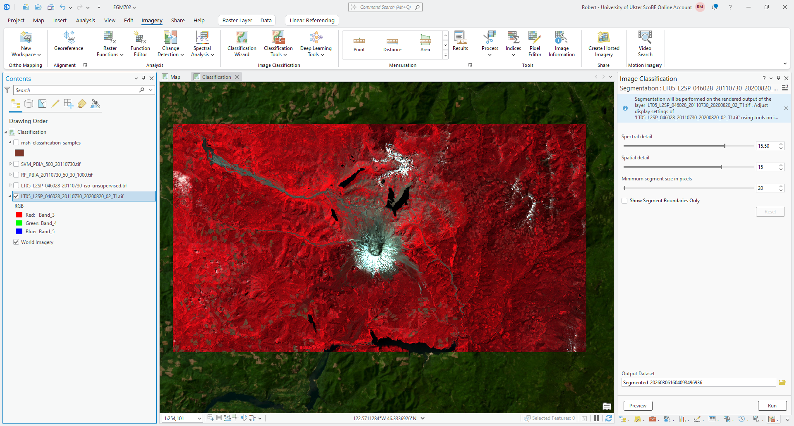
There are two dials that can be adjusted to change the segmentation: Spectral detail, and Spatial detail.
You can also set the Minimum segment size (in pixels), which controls how small the size of each image object can
be.
Each of these two detail values can range between 1 and 20. Lower values of Spectral (or Spatial) detail will give you smoother, typically larger segments. Higher values will give you more detailed, smaller segments.
For the moment, turn the Spectral detail to 18.00, and the Spatial detail to 15. Leave the
Minimum segment size at 20 pixels, and check the Show Segment Boundaries Only box. Then click Preview -
after a moment, you should see the segment boundaries drawn in the map window:
{kind=link}
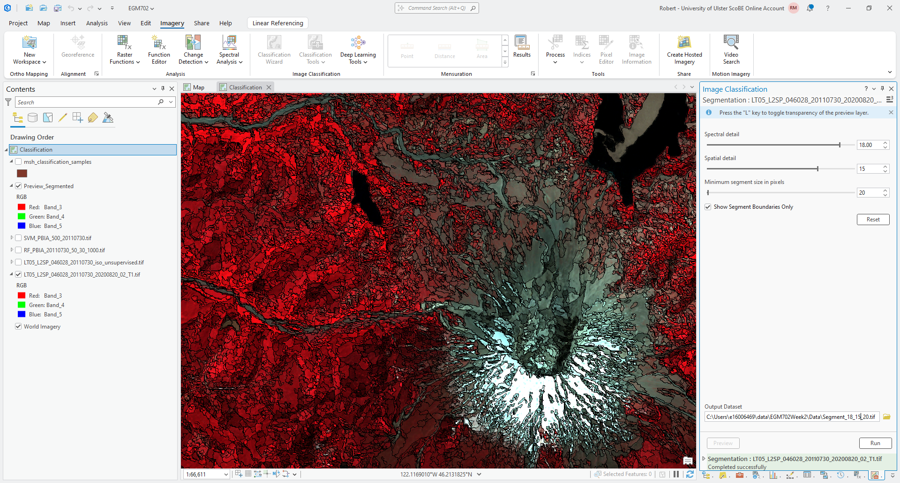
Question
Pan around the image and note how the different boundaries look. What areas show more/less detail? That is, where do you see larger segments/objects?
Question
Try changing the “dials” by increasing/decreasing the value of Spectral detail and/or Spatial detail. How does this change the segment boundaries?
Once you have had a look at the image boundaries, return the dial settings to 18.00 and 15 for
Spectral detail and Spatial detail, respectively, and make sure that you are using the same NIR/Red/Green
false color composite shown in the screenshots above.
Make sure to save the Output Dataset as Segment_18_15_20.tif to your EGM702 data folder, then press Run.
This will create the segmented image file that we will use for the object-based classification methods below.
random forest#
As with pixel-based classification, we’ll start by using random forest classification. With the Landsat image selected in the Contents panel, open the Classification tool (Imagery > Classification Tools > Classification).
Select Random Trees as the Classifier, use the same training samples as before, and leave the
Maximum Number of Trees, Maximum Tree Depth, and Maximum Number of Samples per Class as their default
values (50, 30, and 1000, respectively).
This time, though, add your Segment_18_15_20.tif as the Segmented image rather than leaving it blank. This
will show the Segment Attributes, where you can select which attributes for each segment will be used to train the
classifier:
{kind=link}
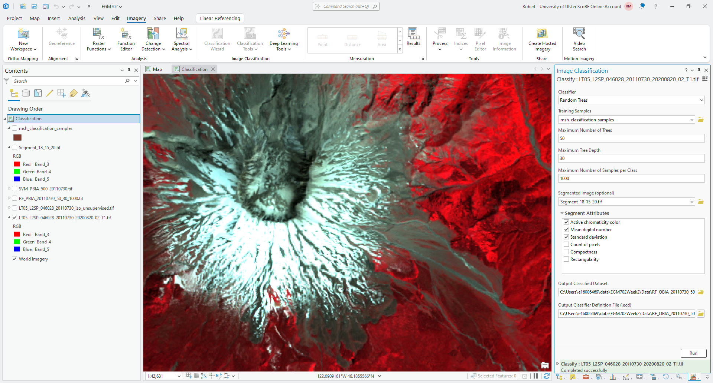
Here, we can use the default values (“Active chromaticity color” and “Mean digital number”), but make sure to also
check “Standard deviation” so that the distribution of values within each segment is also included.
Save the outputs as RF_OBIA_20110730_50_30_1000.tif and RF_OBIA_20110730_50_30_1000.ecd to your EGM702 data
folder, then press Run. Once the tool finishes classifying the image, you should see something like the following:
{kind=link}
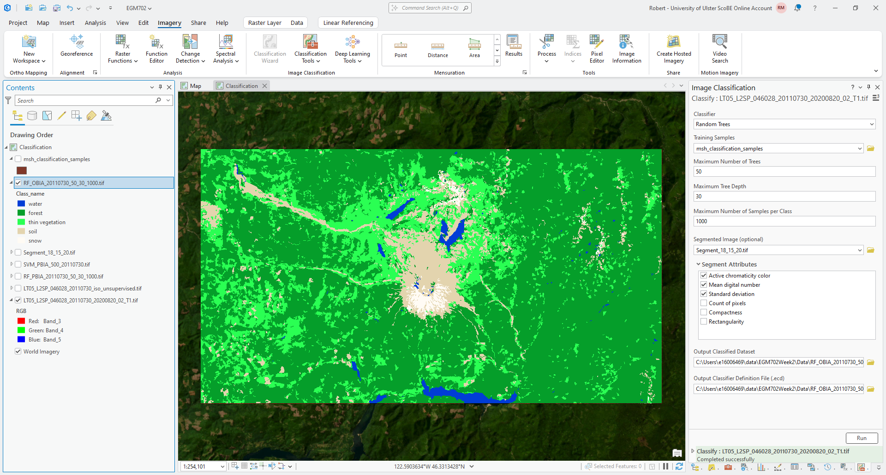
Question
Compare the RF pixel-based and object-based classified rasters. As you did with the RF-SVM comparison, make sure to note areas with big differences between the two rasters.
Make note of the overall characteristics of each image, as well - how do they differ? Which one looks like a more accurate depiction of the landcover classes shown in the Landsat image? Why do you think that is?
Question
Follow the same steps you did above to calculate the area of each class. How does the area of each class compare between the different classified rasters?
support vector machine#
Finally, we’ll repeat the classification using SVM and the segmented image. In the Image Classification tool,
change Classifier to Support Vector Machine. You can keep the training samples the same as before, and keep
the default value for Maximum Number of Samples per Class.
If it isn’t already, add the Segment_18_15_20.tif image as the Segmented Image, and make sure that you are using
the “Active chromaticity color”, “Mean digital number”, and “Standard deviation” as the Segment Attributes.
Save the outputs as SVM_OBIA_20110730_500.tif and SVM_OBIA_20110730_500.ecd to your EGM702 data folder, then
press Run.
Once the tool finishes classifying the image, you should see something like the following:
{kind=link}
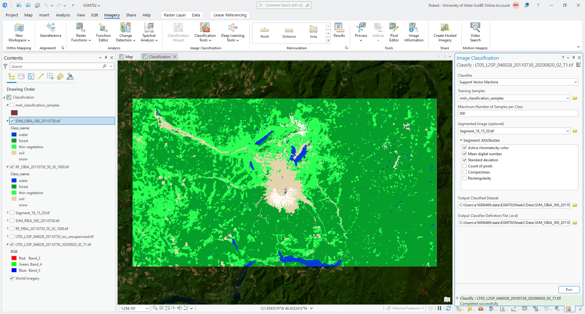
Question
Compare the SVM pixel-based and object-based classified rasters. As you did with the other comparisons, make sure to note areas with big differences between the two rasters.
Make note of the overall characteristics of each image, as well - how do they differ? Which one looks like a more accurate depiction of the landcover classes shown in the Landsat image? Why do you think that is?
Question
Follow the same steps you did previously to calculate the area of each class. How does the area of each class compare between the different classified rasters?
accuracy analysis#
For the final part of this practical, we’ll use one of the classified images to perform an additional accuracy analysis in ArcGIS. At this point, you should have multiple classified rasters to work with, but you only need to pick one to work from for this part.
Tip
If you are comparing multiple classification methods, you should repeat the accuracy analysis for each classified raster. That said, you don’t need to re-do the manual classification for each classified raster - you can re-use the points that you have created and just extract the classified values to calculate the raster values.
Note
The instructions below show the object-based classification, but the steps are the same for the pixel-based classification. You are free to choose either image to work with.
Note
It is also possible to do this in QGIS, though some of the steps are slightly different. One benefit is that the semi-automatic classification plugin for QGIS will calculate the unbiased area estimate and uncertainty values as part of the accuracy analysis for you.
If you haven’t already, make sure to download the area_uncertainty.py python script linked at the beginning of the practical - you’ll need this to calculate the area uncertainty of the classification.
For this example, I am using the same NIR/Red/Green composite that we used previously, but feel free to adjust/change this as needed. As you manually identify points, it may be easier to use different band combinations.
generating random points#
The first part of the accuracy analysis is generating a set of random points to manually classify. This is what we will use as the reference (or “ground truth”1) for the accuracy analysis.
From the Geoprocessing tab, open Create Accuracy Assessment Points (documentation):
{kind=link}
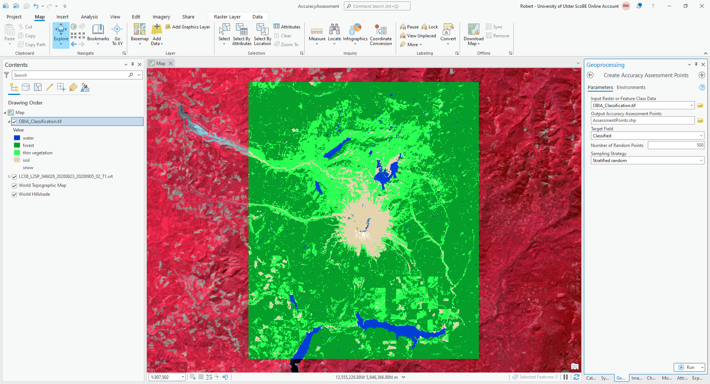
Under Input Raster or Feature Class Data, choose the classified raster that you want to work with. Under
Output Accuracy Assessment Points, create a new layer in your project geodatabase (or a new shapefile) called
AssessmentPoints. Under Target Field, choose Classified, and choose a
Stratified random Sampling Strategy.
Note
With stratified random sampling, the Create Accuracy Assessment Points tool will create random points within each class, with the number of points for each class determined by the proportion of the area taken up by that class.
The default value of Number of Random Points is 500, which is what I will use here. Using this with the classified image there were only 13 points classified as water, and only 10 points classified as snow. This is not really enough to get an accurate picture of the classification performance of these classes.
For now, however, the default value will suffice, but I recommend increasing the number of points if you want to do this for an assignment or your MSc project.
Note
We can also generate fully random points (with the Random Sampling Strategy) - in this case, the points will
be randomly distributed throughout the image area, rather than proportional to each class area. This means that you
may end up with no points in a class with a small area.
In this case, once you have gone through the effort of manually classifying the points, you might want to check the frequency of each of the classes against proportional area of each class.
If you have some classes that are under-sampled, it might be worth adding additional randomly sampled points from those areas.
Click OK, and you should see the new layer added to the map. Right-click on the layer and select Attribute Table to show the attribute table for these points:
{kind=link}
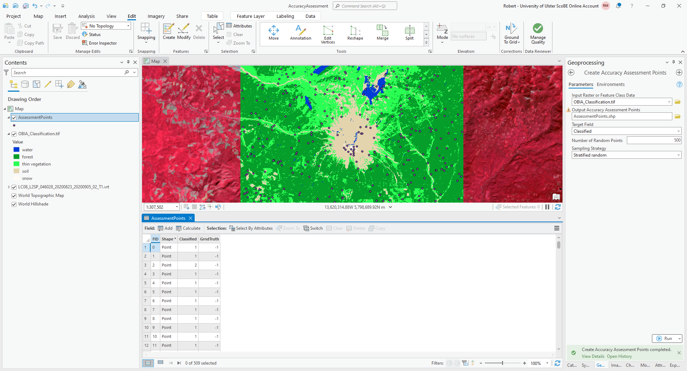
In this table, you should see there is a Classified field, and a GrndTruth field. The Classified
field contains the value from the classified image for each point, while the GrndTruth field is currently set to
a value of -1 for all points, indicating that it has not been entered.
Our job now is to manually enter the class value for each point.
Warning
Technically, because this is an object-based classification, we should be looking at the image objects where each point is located, rather than the individual pixels.
For the purposes of this exercise, it will be fine to use the pixels.
manual classification#
To get started, right-click on the first row of the table, then select Zoom To (you may want to zoom further in/out, depending on the scale of the map):
{kind=link}
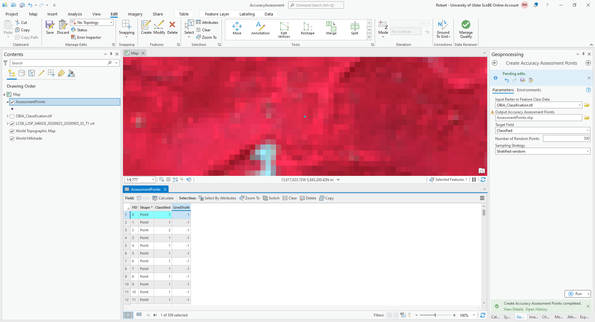
The Classified value for this point is 1, corresponding to forest. To my eye, this point does indeed look
like it is located in a forest, so I have entered a 1 in the GrndTruth field for this row.
Note
Remember that this is only an example - your results will most likely be different, especially if you are using a different image!
Move on to the next point, and the next point, and so on, until you have manually entered the values for each point.
In addition to the Landsat image, you can also use the basemap to help interpret each point, though keep in mind that those images may be out of date compared to the Landsat image.
Danger
BE SURE TO SAVE YOUR CHANGES OFTEN!!
Once you have finished entering each point value, open the Compute Confusion Matrix tool from the Geoprocessing tab:
{kind=link}
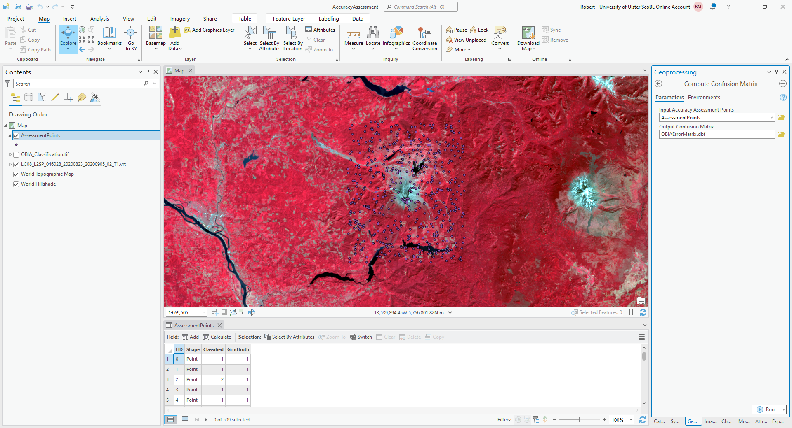
The Input Accuracy Assessment Points should be your AssessmentPoints layer. Save the
Output Confusion Matrix to a file called {class}_ErrorMatrix.csv, in the same folder as your classification
maps, where {class} is the name of your classified raster.
Warning
For the provided python script to work, it is important that this file be saved with a .csv extension, and
that you save it to the same folder where the area_uncertainty.py script is saved.
Click Run, and you should see a new layer under Standalone Tables in the layer menu. Right-click on this layer, then select Open to open and view the table:
{kind=link}
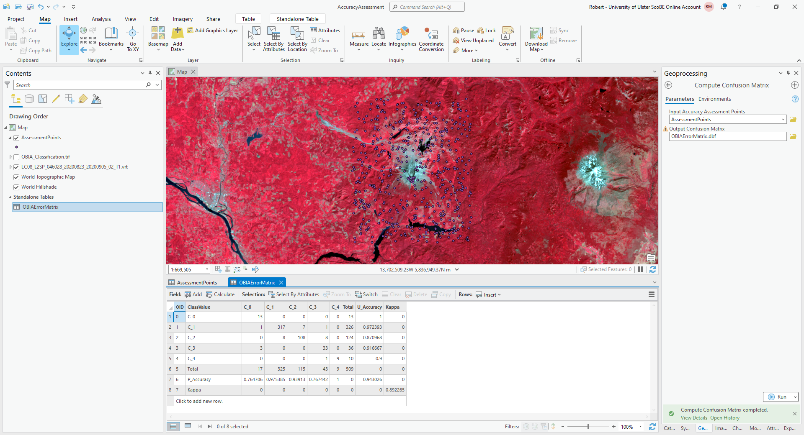
The error matrix shown above contains a row for the producer’s accuracy and a column for the user’s (consumer’s)
accuracy, as well as the kappa statistic for the classification. I have re-created the error matrix here, with updated
labels:
water |
forest |
thin vegetation |
soil |
snow |
|
|---|---|---|---|---|---|
water |
13 |
0 |
0 |
0 |
0 |
forest |
1 |
317 |
7 |
1 |
0 |
thin vegetation |
0 |
8 |
108 |
8 |
0 |
soil |
3 |
1 |
0 |
33 |
0 |
snow |
0 |
0 |
0 |
1 |
9 |
and the producer’s and consumer’s accuracy:
water |
forest |
thin vegetation |
soil |
snow |
|
|---|---|---|---|---|---|
producer’s accuracy |
76.5% |
97.5% |
93.9% |
76.7% |
100% |
consumer’s accuracy |
100% |
97.2% |
87.1% |
91.7% |
90% |
The final step for the practical will be re-calculating the area and uncertainty estimates using this error matrix, using the area_uncertainty.py script provided in the practical data.
From the Start menu, find the ArcGIS folder, and click on Python Command Prompt:
{kind=link}
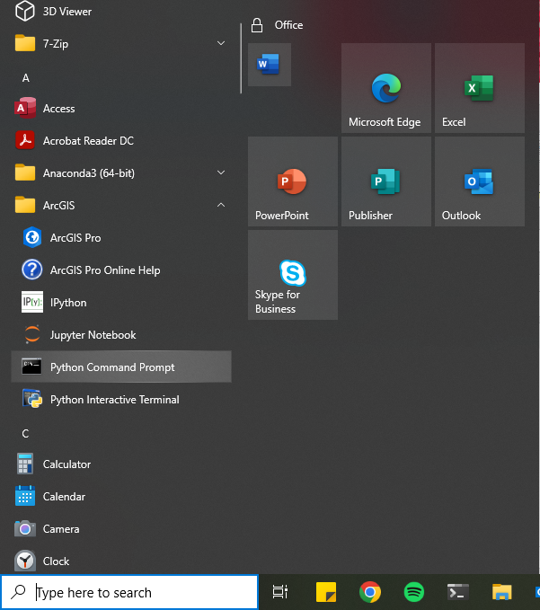
Navigate to the folder where area_uncertainty.py is kept using cd:
cd C:\Users\bob\EGM702\Practicals\Week5\
Then, run the script using the following command:
python area_uncertainty.py path-to-error-matrix-csv path-to-area-table
remembering to replace path-to-error-matrix-csv with the path to the CSV for the error matrix that you generated
earlier, and path-to-area-table with the path to the area table for this classification.
You should see the following output, or something very similar:
{kind=link}
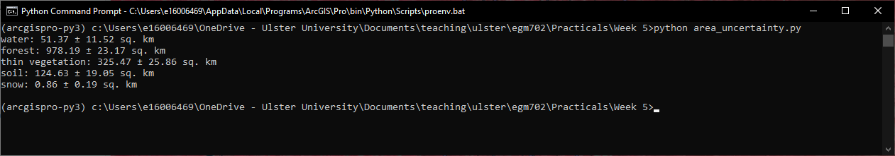
Question
Compare the output of this script to the original areas tabulated for the classified raster.
How do the area estimates and associated uncertainties compare to the original values?
Which class has the largest uncertainty?
Which estimates do you think are more realistic/representative? Why?
That is the end of the EGM702 practicals. If you are still wanting more practice/ideas for your project, feel free to have a look at some of the suggestions below - otherwise, turn off the computer, go outside, and enjoy the (hopefully) nice weather. :)
next steps#
In this practical, we have seen a few different ways to classify images in ArcGIS. For the most part, we have stuck to the default parameters for the different classification methods, and used a single set of parameters for the image segmentation and object-based classification.
One thing you might want to try is changing the different parameters, for both the classifiers and the segmentation, then comparing the accuracy of these results to the results obtained with the default values.
Another option is to include additional “features” (in the machine-learning parlance) for the classification. We have stuck to the six Landsat TM bands (1-5, 7) for the classification, but there is no reason we need to do this. For example, we could also use:
the thermal (B6) radiance or surface temperature values
derivatives of the original bands (for example, NDVI, NDWI, different band ratios, etc)
DEM-derived parameters such as elevation, slope, or aspect
a subset of the Landsat bands
PCA bands rather than the original Landsat bands
and so on. To do this in practice, you would need to using the Composite Bands tool to combine the different “features” into a single raster - this is then the raster you would use for the classification.
One thing that we have not explored is the use of image texture, as well - partly because this is not easily implemented in ArcGIS Pro, at least as of version 3.6. If you are interested in seeing how texture can be used in an object-based classification, have a look at the GEE Classification exercise, which makes use of some of these.
Finally, you might also want to update/change your training samples - remember that your classifier is only as good as the data that was used to train it in the first place.
notes#
- 1
This isn’t really the best phrase to use here, in part because we’re not actually checking these things “on the ground”, and it’s also difficult to say what the “true” class value should be. I will do my best to stick with “reference” when I’m referring to the manually classified points.